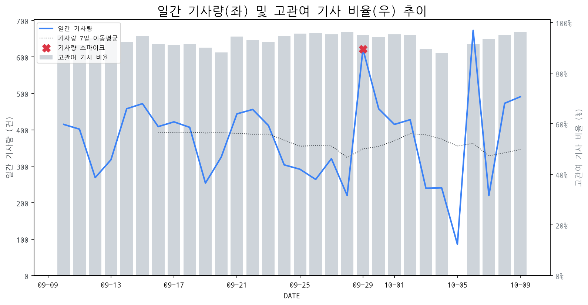

1
시장 활동 지표
기사량 추세 & 이상 징후 탐지
시장의 '전체 기사량'이 평소보다 비정상적으로 급증했는지(Spike)를 차트로 확인하고, LLM이 분석한 급등의 핵심 원인을 파악할 수 있음

고관여 기사란? 산업 연관 키워드로 수집된 기사들 중 디스플레이 키워드에 가중치를 반영하여 도출된 관련성 높은 기사
수집된 기사 수 (2026-10-09)
491
+15% WoW
기사량 변동 수준 (7일 이동평균 대비)
±6.7% 이하
2
오늘의 키워드
급격한 관심 ↑, 주목해야 할 키워드
1
boe
+3.0σ
BOE가 화웨이 공급망 핵심 역할을 부각하며 디스플레이 업계의 지배력 강화 가능성이 제기되었습니다.
Related Metrics
금일 언급량: 8, 전일 대비: +8
Interpretation
경쟁사, 긴장해야 함
Next Step
'boe' 관련 상세 기사 및 경쟁사 반응 모니터링
2
sk하이닉스
+2.9σ
아이폰18 주문 축소 우려와 온체인 선물 할인으로 SK하이닉스 주가 변동성이 확대되었습니다.
Related Metrics
금일 언급량: 9, 전일 대비: +8
Interpretation
AI 역설, 공급망 리스크 고려
Next Step
'sk하이닉스' 관련 상세 기사 및 경쟁사 반응 모니터링
3
애플
+2.6σ
애플의 10월 말 터치스크린 맥북 및 OLED 탑재 신제품 공개 보도가 키워드 급증을 견인했습니다.
Related Metrics
금일 언급량: 20, 전일 대비: +16
Interpretation
OLED 채택 확대 기대
Next Step
핵심 토픽 'Foldable_Display_Topic' 관련 신호입니다. 3번 섹션(키워드 감성분석)에서 해당 토픽의 감성 변동을 교차 확인하세요.
4
공급망
+2.2σ
LX세미콘, BOE 등 주요 기업의 공급망 혁신 및 중요성 부각으로 관련 이슈 급증.
Related Metrics
금일 언급량: 8, 전일 대비: +6
Interpretation
공급망 재편, 중요도 상승
Next Step
'공급망' 관련 상세 기사 및 경쟁사 반응 모니터링
3
실시간 Risk 키워드
경계해야 할 시그널 탐지
특정 토픽의 부정 감성 점수가 급등할 때 이를 즉시 탐지하고, "근거 기사" 링크를 통해 리스크의 실체를 빠르게 파악할 수 있음
키워드 분석 결과, 오늘은 걱정할 만한 하락 신호가 없습니다. (부정 언급량 변화: +1.5σ 이내)
4
주요 이벤트 모니터링
실시간 산업 동향 파악을 위한 주요 활동
최근 발생한 주요 기업들의 신제품 출시, 투자 등 주요 이벤트를 제공하여 매일 경쟁사 동향을 확인할 수 있음
삼성전자의 갤럭시북6와 LG전자의 그램북이 최신 보급형 CPU인 '와일드캣 레이크'를 탑재한 신제품을 출시했습니다. 이는 보급형 노트북 시장에서의 경쟁 심화를 예고합니다.
Impact
보급형 노트북의 성능 향상 및 가격 경쟁 심화로 인해, 디스플레이 제조 기업들은 더욱 가격 경쟁력이 있고 차별화된 성능을 가진 디스플레이 패널 공급에 집중해야 할 것입니다.
Next Step
보급형 노트북 시장의 수요 증가에 대비하여, 고품질이면서도 비용 효율적인 디스플레이 패널 솔루션을 경쟁력 있는 가격으로 제공할 수 있도록 생산 및 공급망을 재점검해야 합니다.
애플의 아이폰 폴더블 출시가 성공할 경우, 한국의 디스플레이 부품 관련 기업들에게 새로운 성장 기회가 될 수 있다. 이는 폴더블 디스플레이 시장의 확대와 기술 발전을 견인할 것으로 예상된다.
Impact
아이폰의 폴더블 시장 진입은 폴더블 디스플레이 채택률을 높여 관련 부품 시장 전반의 성장을 촉진하고, 기술 혁신 경쟁을 심화시킬 것이다.
Next Step
폴더블 디스플레이 핵심 부품 기술력을 강화하고, 애플 및 관련 협력사와의 파트너십 기회를 적극적으로 모색해야 한다.
구글북의 첫 사용기에서 하드웨어 성능은 최상급으로 평가되었으나, 소프트웨어 경험은 크롬OS보다도 부족하다는 혹평을 받았습니다. 이는 구글의 자체 하드웨어 전략과 소프트웨어 통합 능력에 대한 의문을 제기합니다.
Impact
하드웨어의 경쟁력에도 불구하고 소프트웨어의 한계는 구글 기기의 시장 확산에 부정적인 영향을 미칠 수 있으며, 이는 유사한 소프트웨어 기반의 디스플레이 기기 시장에도 간접적인 영향을 줄 수 있습니다.
Next Step
디스플레이 제조 기업은 하드웨어 혁신과 더불어 사용자 경험을 극대화하는 직관적이고 완성도 높은 소프트웨어 통합 전략을 병행하여 경쟁 우위를 확보해야 합니다.
중국 디스플레이 제조사 BOE가 화웨이의 핵심 공급망으로 자리매김하며, 두 기업 간의 긴밀한 협력이 강조되고 있습니다. 이는 BOE의 디스플레이 기술력과 생산 능력이 화웨이 스마트폰 제조에 필수적임을 시사합니다.
Impact
BOE와 같은 중국 디스플레이 제조사의 성장은 한국 및 대만 디스플레이 기업들에게 경쟁 심화 및 시장 점유율 변화에 대한 압박으로 작용할 수 있습니다.
Next Step
디스플레이 제조 기업은 BOE의 기술력과 공급망 내 영향력을 분석하고, 핵심 기술 경쟁력 강화 및 신규 시장 개척을 통해 대응 전략을 수립해야 합니다.
애플의 신형 아이패드 미니 8은 OLED 디스플레이를 탑재하지만, 120Hz 프로모션 기술은 적용되지 않고 60Hz 주사율을 유지할 것으로 예상됩니다. 이는 OLED 전환에도 불구하고 일부 고급 디스플레이 기능은 제외될 가능성을 시사합니다.
Impact
OLED 채택 확대 추세 속에서도 프리미엄 태블릿 시장에서 고주사율 기술의 중요성이 재조명될 수 있으며, 경쟁사 제품과의 차별화 요소로 작용할 가능성이 있습니다.
Next Step
OLED 기술 경쟁력 강화와 더불어, 고주사율 디스플레이 기술 개발 및 적용 범위를 확대하여 프리미엄 시장의 니즈에 부응해야 합니다.